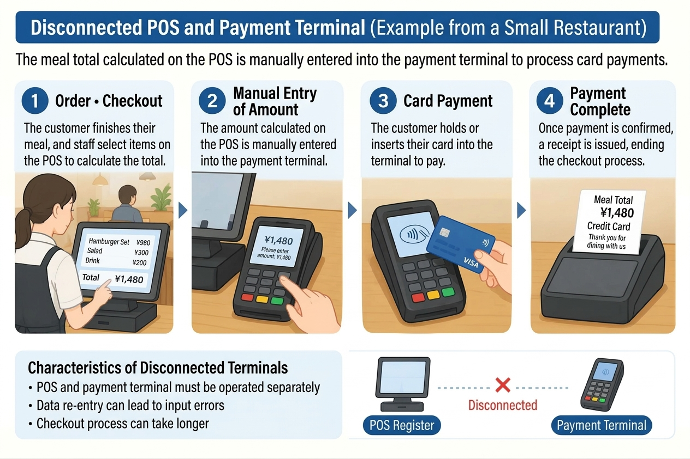
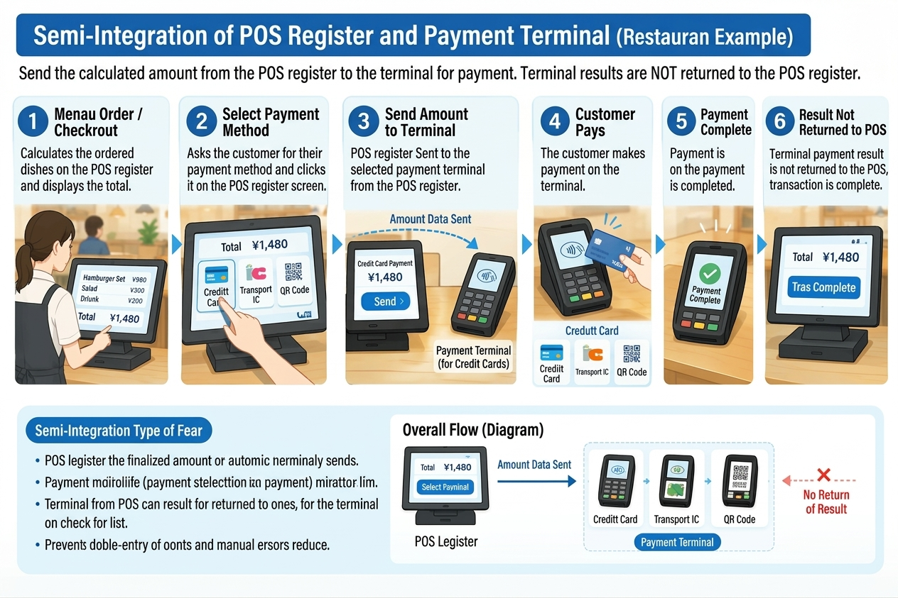
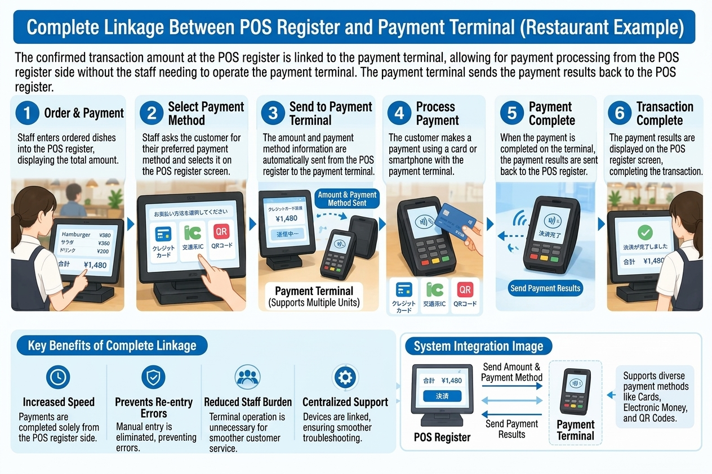
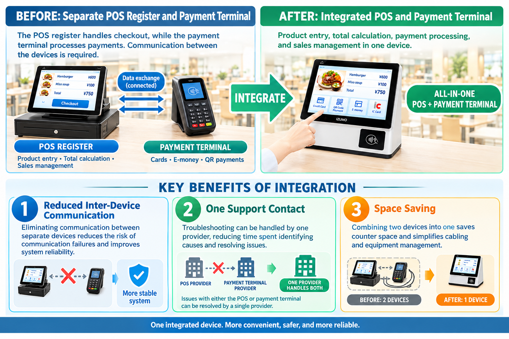

What you will learn in this article
- The difference in roles between a POS register and a payment terminal
- The difference between the three integration methods: non-linked, semi-linked, and fully linked
- The dish-price recognition methods (RFID and AI image recognition) needed for cafeteria auto-registers
- The features and benefits of an integrated cafeteria auto-register that does not rely on an external payment terminal
To understand how checkout works, the roles of the POS register and the payment terminal, and how the two link together, are important points. In company and university cafeterias in particular, there is also the challenge of how to recognize the prices of dishes that have no barcodes. This article clearly explains everything from the relationship between the POS register and the payment terminal to the evolution of cafeteria auto-registers.
1. What Is the Role of a POS Register?
Key point: A POS register is a register system that records and aggregates sales data such as when, what, how many, and at what price items were sold. It can be used for sales totaling, sales-status analysis, and inventory management.
A POS register is a register system equipped with a POS (Point of Sale) function that records and aggregates the information of when, what, how many, and at what price items were sold at the time of sale.
By automatically recording sales data, it can be used for sales totaling, sales-status analysis, inventory management, and more.
At supermarkets and convenience stores, a mechanism that reads product barcodes to obtain product information and prices and calculate the checkout amount is common.
2. What Is the Role of a Payment Terminal?
Key point: A payment terminal is a device for cashless payment using credit cards, electronic money, QR codes, and so on. While a POS register manages what was sold and at what price, the payment terminal handles which payment method is used and how much is paid.
A payment terminal is a device for performing cashless payment using credit cards, electronic money, QR code payments, and the like.
While a POS register manages what was sold and at what price, the payment terminal handles the payment process of which payment method is used and how much is paid.
In other words, the POS register and the payment terminal each have different roles and, by working together, deliver smooth checkout.
3. The Three Integration Methods Between a POS Register and a Payment Terminal
Key point: Integration methods between a POS register and a payment terminal are generally divided into three types: non-linked, semi-linked, and fully linked. The higher the degree of integration, the more it prevents double entry of amounts and simplifies checkout operations.
Integration methods between a POS register and a payment terminal are generally divided into three types: non-linked, semi-linked, and fully linked.
(1) Non-Linked Type: Enter the Amount on Each Device
This is a method in which the POS register and the payment terminal are not linked.
After the checkout amount is confirmed on the POS register, the staff enters the same amount into the payment terminal as well to process payment.

Characteristics
- The POS register and the payment terminal must each be operated
- Because the amount is entered twice, input errors can occur
- Checkout tends to take time
(2) Semi-Linked Type: Amount Data Is Linked, Operations on the Payment Terminal
This is a method in which the checkout amount confirmed on the POS register is sent automatically to the payment terminal.
There is no need to re-enter the amount, but operations such as selecting the payment method or starting the payment may be required on the payment terminal side.

Characteristics
- Double entry of the amount can be prevented
- Amount mistakes from manual entry can be reduced
- An operation is required to manually mark the payment terminal's payment result as complete on the POS register.
(3) Fully Linked Type: Payment Starting From the POS Register Operation
This is a method in which, when payment processing is started on the POS register, information such as the checkout amount is linked to the payment terminal and the payment process proceeds.
There is no need to enter the amount on the payment terminal side, and in supported systems the checkout can proceed centered on the POS register operation.

Characteristics
- Checkout operations can be simplified
- Double entry of the amount can be prevented
- It leads to shorter checkout times and a reduced burden on staff
However, even with full linking, operations according to the payment method, such as the user tapping a card or entering a PIN, may still be required.
Comparison of the Three Integration Methods
| Comparison item | Non-linked | Semi-linked | Fully linked |
|---|---|---|---|
| Automatic amount linking | None | Yes | Yes |
| Amount entry on the payment terminal | Required | Not required | Not required |
| Operation on the payment terminal side | Required | May be required | In principle proceeds centered on POS-side operation |
| Double entry of the amount | Occurs | Prevented | Prevented |
| Simplification of checkout operations | Limited | Some effect | A higher effect can be expected |
* The actual operation methods and scope of linking differ by product and payment method.
4. A Cafeteria Auto-Register Needs a Mechanism to Recognize Dish Prices
Key point: In company and university cafeterias, dishes and tableware have no barcodes, so a mechanism that automatically recognizes dish prices is needed. Representative methods are the RFID recognition method and the AI image recognition method.
In company and university cafeterias, unlike supermarket products, dishes and tableware generally do not have barcodes.
Therefore, if a general POS register is used as is, it becomes necessary to manually enter the price of each dish or register product information in some other way.
In cafeterias with many users in particular, a mechanism that automatically recognizes dish prices and enables quick checkout is important.
Representative methods are the RFID recognition method and the AI image recognition method.
RFID Register: Identifying Dishes by RFID Tags on Tableware
In the RFID method, RFID tags are attached to tableware and the like, and a reader reads the tag information.
By matching the pre-registered tags with dish information, the dish price is obtained and the checkout amount is calculated.
- Read the RFID tag attached to the tableware
- Identify the dish from the tag information
- Obtain the registered price and calculate the total amount
AI Recognition Register: Identifying Dishes From Camera Images
In the AI image recognition method, an AI analyzes images of dishes and tableware captured by a camera to identify the types of dishes.
By matching the identification results against pre-registered product information and prices, the checkout amount is calculated automatically.
- Capture the dishes and tableware with a camera
- The AI identifies the dishes from the images
- Obtain the registered prices and calculate the total amount
In this method, instead of attaching an RFID tag to each piece of tableware, dishes can be identified by image recognition. However, because recognition accuracy is affected by the appearance and plating of dishes and lighting conditions, verification suited to the installation environment is important.
5. The POS Function and Payment Function in a Cafeteria Auto-Register
Key point: A cafeteria auto-register needs both a function to recognize dishes and calculate prices and a function to process users' payments. Many systems adopt a configuration that fully links the device handling the POS function with an external payment terminal.
To realize a cafeteria auto-register, both a function to recognize dishes and calculate prices and a function to process users' payments are needed.
In a general configuration, the flow is as follows.
- Identify dishes by RFID or AI image recognition
- Calculate the total amount from the registered prices
- Manage the transaction information with the POS function
- Process the payment in conjunction with the payment terminal
- Confirm the payment result and complete checkout
In many systems, a configuration that combines a device handling the POS function with an external payment terminal and fully links the two is adopted.
This method makes it possible to streamline everything from dish recognition to checkout-amount calculation and payment processing. On the other hand, when using an external payment terminal, it is also necessary to consider the connection between devices, the supported payment methods, and the maintenance and support structure.
6. A Cafeteria Auto-Register That Does Not Rely on an External Payment Terminal
Key point: Izumo Soan (IZUMO SOAN)'s cafeteria auto-register provides payment functions by face recognition, QR code, and card, in addition to dish-price recognition and checkout processing. Without relying on separately connecting an external payment terminal, you can build a checkout system suited to the cafeteria's operation.
The cafeteria auto-register proposed by Izumo Soan (IZUMO SOAN) is a product that integrates the POS register and the payment terminal.

The cafeteria auto-register proposed by Izumo Soan (IZUMO SOAN) is a system that provides payment functions by face recognition, QR code, and card, in addition to dish-price recognition and checkout processing.
Its feature is that it does not rely on a configuration that separately connects an external payment terminal, so you can build a checkout system suited to the cafeteria's operation.
Expected Benefits
1. A Simpler System Configuration
By designing everything from dish recognition to checkout and payment in an integrated way, the complexity of configuration that comes with connecting external devices can be kept down.
2. Space Savings
Compared with a configuration that adds a separate payment terminal, the installation space for devices may be reduced.
3. More Efficient Maintenance and Operation
By designing the entire system in an integrated way, the burden of isolating problems between devices is reduced, making operation and maintenance easier to streamline.
4. Payment Methods Suited to the Cafeteria
Payment methods suited to the cafeteria's operating policy and users' needs, such as face recognition, QR code, and card, can be considered.
* The available payment methods, connection requirements with external services, and payment-processing configuration differ by the specifications of the product or service introduced.
7. The Challenge of Payment Fees in Cafeteria Operation
Key point: In company and university cafeteria operation, "nutrition," "health," and "price" are important keywords. Cashless payment fees, which are easily overlooked, can pile up and squeeze profits, so comparing the total cost is important.
In the operation of company and university cafeterias, not only the quality of the dishes but also three keywords—"nutrition," "health," and "price"—are important.
To provide users with nutritionally balanced meals at reasonable prices, it is necessary to pay attention not only to ingredient and labor costs but also to the operating costs that occur daily.
Among these, what tends to be overlooked are cashless payment fees.
Payment Fees Are a Cost the Cafeteria Cannot Ignore
With typical cashless payment services, a fee of around 3% of the payment amount may occur depending on the contract terms.
For example, in a cafeteria serving meals at 500 yen each, if the annual cashless payment amount were 30 million yen, a 3% payment fee would amount to 900,000 yen in costs per year.
| Item | Amount |
|---|---|
| Price per meal | 500 yen |
| Annual payment turnover | 30 million yen |
| Payment fee rate (assumed) | 3% |
| Annual payment fees | 900,000 yen |
* The above is an estimate to explain the mechanism and does not indicate an actual fee rate or turnover.
In cafeteria operation, such costs piling up can squeeze profits. In company and university cafeterias, where meal prices cannot easily be raised, especially careful cost management is required.
The Choice of Payment System Affects the Cafeteria's Prices and Service
When advancing a cafeteria's shift to cashless, it is important to compare not only checkout speed and convenience but also the total cost, including payment fees.
Izumo Soan (IZUMO SOAN)'s cafeteria auto-register is equipped with payment functions by face recognition, QR code, and card, and can realize a system configuration that does not rely on an external payment terminal.
For example, with methods that use in-cafeteria user accounts or prepaid balances, a cost structure different from typical credit-card payments and the like can be considered.
What matters is not simply automating checkout. Through the labor savings from introducing the system and the optimization of operating costs, the aim is to create an environment where users can be provided with nutritionally balanced meals at healthy, reasonable prices.
8. Conclusion: For a Cafeteria Auto-Register, Both "Dish Recognition" and "Payment" Matter
Key point: By linking the POS register and the payment terminal, checkout processing can be streamlined. In cafeterias, it is important to identify dishes without barcodes by RFID or AI image recognition, automatically calculate the total, and combine this with an appropriate payment function.
The POS register and the payment terminal each play different roles. By linking the two, double entry of amounts can be prevented and checkout processing can be streamlined.
On the other hand, in company and university cafeterias, there is also the challenge of how to identify dishes without barcodes and automatically calculate prices.
Identifying dishes by RFID or AI image recognition and automatically calculating the checkout amount, together with combining an appropriate payment function, is an important point for a cafeteria auto-register.
Through a cafeteria auto-register that considers everything from dish-price recognition to checkout and payment by face recognition, QR code, and card, Izumo Soan (IZUMO SOAN) supports the efficiency of checkout operations at company and university cafeterias.
From dish recognition to payment, making cafeteria checkout simpler.
For product details, please see the cafeteria auto-register product page.
Why not experience the results firsthand with a free PoC?
AI image recognition, RFID, and weight-based checkout — test the method best suited to your cafeteria in a real environment.
We handle everything from bringing in and installing the equipment to removing it. There is no cost at all.